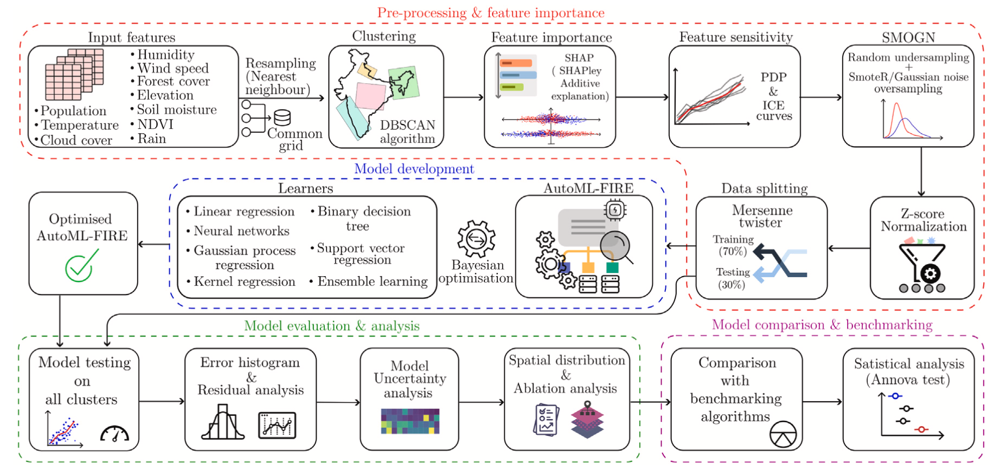

Research Scope
Forest fires pose a serious threat to India's environment, where approximately 21.7% of the land is covered by forests and 36% of these regions are prone to frequent fires. This study represents the first pan-India research to predict forest fire occurrences across the most vulnerable regions using a comprehensive dataset spanning 2003 to 2018.
Methodology
The research addresses the high regional variability of the Indian landscape and the challenge of imbalanced natural hazard data through several innovative stages:
- Multi-Source Data Fusion: Compiled a high-dimensional dataset by integrating multi-model observations including MODIS/FIRMS fire counts, ERA5 reanalysis (humidity, wind speed, cloud cover), GPCP precipitation, BERKEARTH temperature, and socio-economic indicators from GPWv4.
- Spatial Clustering: Utilized the DBSCAN algorithm to partition the Indian landmass into four distinct clusters (North, North-East, Center & East, and South & West) to capture unique regional patterns based on shared environmental conditions.
- SMOGN Algorithm: Addressed the severe data imbalance inherent in natural hazards using the Synthetic Minority Over-Sampling Technique for Regression with Gaussian Noise, ensuring the model effectively learns from rare catastrophic fire events.
- AutoML Framework: Proposed an automated framework utilizing Bayesian Optimization to navigate a vast pool of models and fine-tune hyperparameters without manual bias.
- Model Interpretability: Employed SHAP (SHapley Additive exPlanations) and Partial Dependence Plots (PDP) to decode the "black box" of ML, identifying population density and soil moisture as critical regional drivers.
Key Results
The "AutoML-FIRE" model demonstrated robust stability and superior performance compared to all benchmarking algorithms:
- Predictive Accuracy: Achieved R values between 0.73 and 0.85 across clusters, outperforming conventional single-algorithm approaches.
- Error Metrics: Maintained low RMSE values ranging from 3.40 to 6.09, representing highly reliable fire count estimations per grid.
- Reliability: Uncertainty analysis confirmed the model's stability, with variations in predictions remaining within a narrow range of -2.87% to 1.82% even under feature perturbations.